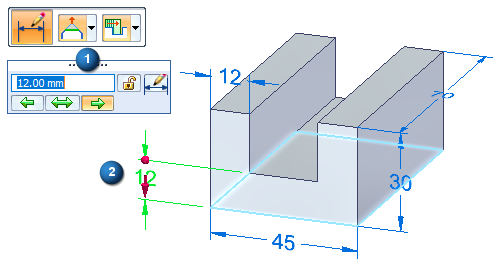
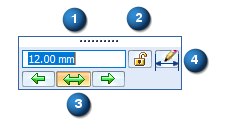
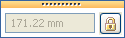
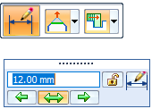
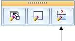
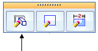
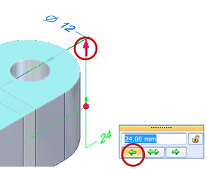
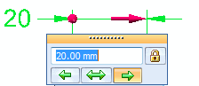
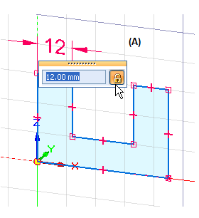
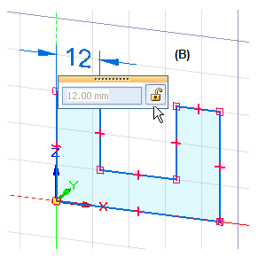

Dimension value edit controls
Dimension value edit handle
The dimension value edit handle consists of the following controls to modify dimension values:

Dimension Value Edit dialog box

|
Control |
Effect |
|
(1) Value edit box |
Enters or edits a dimensional value using one of the following techniques:
Pressing the Tab key applies the value and keeps the dialog box open. Pressing Enter applies the value and closes it. |
|
(2) Driving/Driven Dimension |
Changes the selected dimension to a driving dimension or a driven dimension. Lock to make it a driving dimension value. Unlock to make it a driven dimension value. Tip:
|
|
(3) Directional arrows |
Specifies the direction to apply the dimension value edit. The default direction is indicated by the highlighted arrow button. The specified change can be symmetric as well. You also can specify direction using the dimension direction indicators on the dimension line. |
|
(4) Modify |
Click the Modify button to switch between dimension value editing mode and dimension formatting mode. |
|
Note:
If a dimension value edit box is completely disabled, it means the dimension cannot be edited in its current state.  |
|
Displaying 3D PMI dimension editing controls (synchronous and ordered)
Depending on the dimension type and where you click, a single click can display all the dimension editing functions, or display only the dimension value edit box. In many cases, you can use Alt+click to get the opposite behavior. Examples of these behaviors are shown in the following table.
To learn how to recognize dimension types by their color, see the help topic PMI dimensions and annotations. For information about the controls use to edit PMI, see PMI edit handles and cursors.
|
For this dimension type |
When dimensions are |
You can |
By doing this |
|
3D PMI dimensions (synchronous, ordered) |
Driven |
Edit the dimension formatting. |
|
|
Edit the dimension value. Display the synchronous dimension value edit command bar.  |
|
||
|
Driven (to scale) |
Edit the dimension format. |
Click anywhere on the dimension. |
|
|
Edit the dimension value and format. |
With the dimension already selected, click the dimension text. |
||
|
Driven (not-to-scale) |
Edit the dimension value and format. |
|
|
|
Edit dimension format. |
|
||
|
Automatic dimensions on ordered features |
When the Dynamic Edit command is selected:  |
Edit the dimension value and format. |
|
|
Edit the dimension format. |
|
||
|
In edit definition mode:  |
Edit the dimension value only. |
Click the dimension text. |
|
|
All PMI dimensions |
All dimension behaviors |
Delete the dimension value in the Dimension Value Edit box. |
When the cursor is in the edit box and the value is highlighted, press the Delete key. |
|
Delete the dimension. |
When the dimension is selected, or when the cursor is outside the edit box, press the Delete key. |

Dimension direction indicators
When you move the cursor onto a synchronous dimension value, or when you Alt+click a dimension line or projection line, a 3D arrow terminator and a 3D sphere terminator appear at opposite ends of the dimension line. These indicate the side of the model to change.
-
The side that will be pushed or pulled is indicated by the 3D arrow terminator.
-
The stationary side is indicated by the 3D sphere terminator.
-
Both 3D arrow terminators are displayed for a symmetric dimension edit.
-
You can use the 3D terminators or the arrow buttons on the Dimension Value Edit dialog box to change the direction of edit.

Sometimes the 3D terminators on the model provide better indicators than the arrows in the dialog box, as shown in the following example.

Variations in the dimension value edit handle
The dimension value edit handle displays controls based on whether you are modifying a model dimension, a sketch dimension, or a drawing dimension.
When you edit a PMI model dimension value, the handle displays directional controls and a dimension lock.

You can use these to specify the direction that you want the model to change, and to prevent a dimension from being changed indirectly.
The dimension value edit handle for 2D sketch geometry in a synchronous model does not provide directional controls.
Sketch dimensions are always placed as driving dimensions (A), so you can adjust the value while you are sketching. When you edit a sketch dimension, you can change it to a driven dimension (B).


To learn how, see Edit a 2D dimension (sketch, profile, draft).
How do I
Resize the model by editing PMI dimension valuesSelect faces to be modified by PMI dimension edits
Lock or unlock a PMI dimension to control edits
Learn more
Editing model dimensionsLook up more details
Modify Dimension command barQuick links
PMI dimensions and annotationsPMI edit handles and cursors